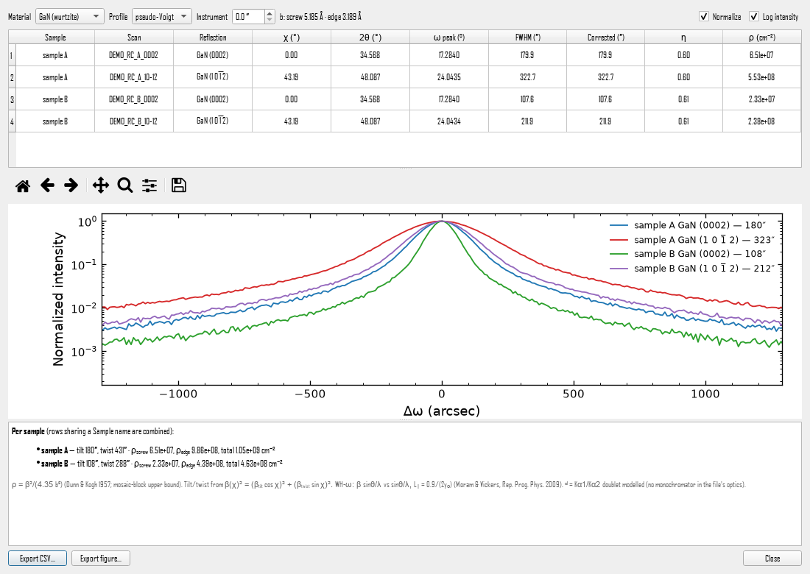
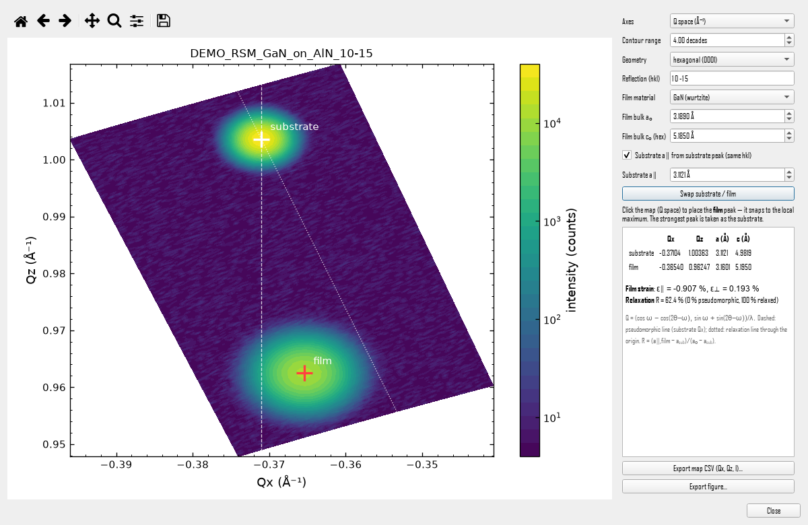
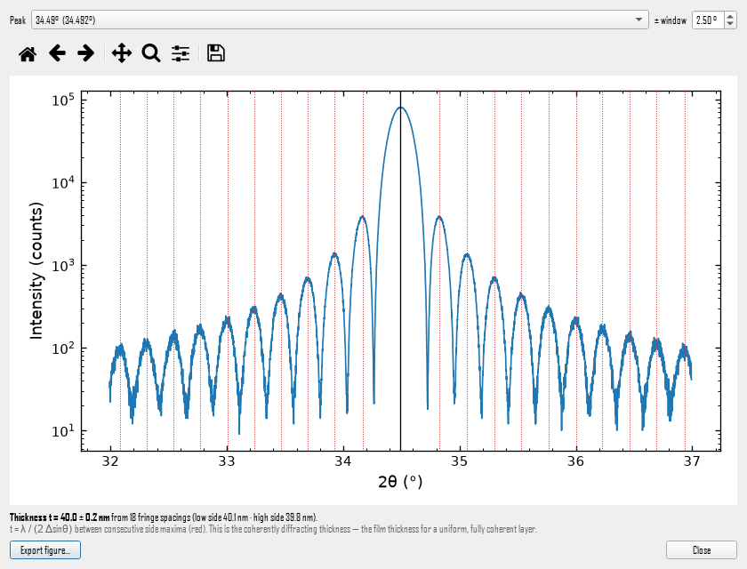
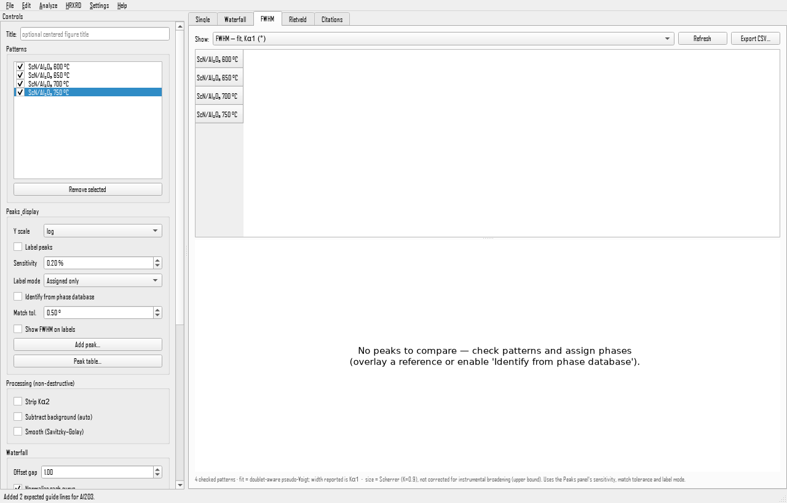
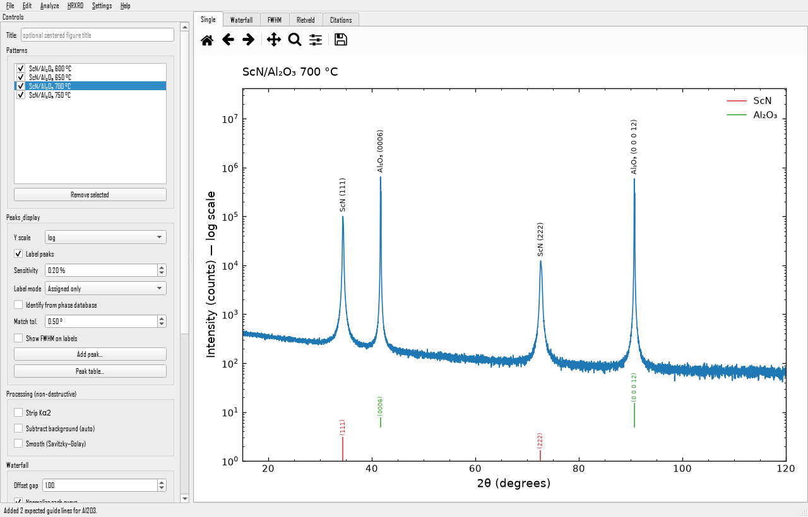
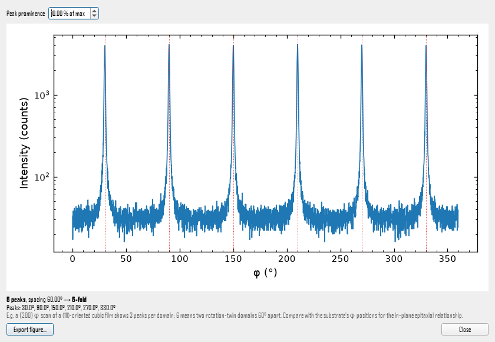

What XRDLab does
Rocking curves & dislocation density
FWHM in arcsec from pseudo-Voigt fits; Dunn–Kogh threading-dislocation density ρ = β²/(4.35 b²); mosaic tilt and twist from symmetric and skew-symmetric reflections; Williamson–Hall-ω lateral coherence length.
Reciprocal-space maps
Qx–Qz maps from area-measurement .xrdml files; automatic substrate and film peaks; in-plane and out-of-plane lattice parameters, strain ε∥ / ε⊥ and degree of relaxation.
Film thickness from fringes
Pendellösung / Laue thickness fringes, t = λ / (2 Δsinθ), tracked outward from the Bragg peak with noise rejection and an uncertainty.
Accurate peak widths
Kα1/Kα2 doublet-aware fitting, instrument-broadening correction, Scherrer size, Williamson–Hall size and microstrain, and an FWHM comparison across sample series.
Publication figures
Stacked waterfall plots, log / sqrt / linear axes, (hkl) peak labels with crystallographic overbars, and editable vector PDF, EPS and SVG export.
Phase identification
A local phase database built from the Materials Project and the Crystallography Open Database, with epitaxy-aware guide lines and literature citations for each identified peak.
Screenshots






All screenshots use generated demo data.
Supported data
| Input | How XRDLab reads it |
|---|---|
Panalytical .xrdml: coupled 2θ-ω / Gonio scans | Against 2θ, with Kα1/Kα2 detected from the optics |
.xrdml ω scans (rocking curves) | Against ω, with the fixed 2θ and χ read from the file |
.xrdml φ scans | Against φ, for in-plane symmetry |
.xrdml area measurements | As a reciprocal-space map (Qx–Qz) |
.xy, .dat, .txt, .csv | Two-column 2θ / intensity data |
Install
Windows, with Python 3.11 and git installed:
git clone https://github.com/Rqsh-c0des/xrdlab.git
cd xrdlab
.\XRDLab.batThe first run sets everything up. After that XRDLab opens instantly and updates itself when a new version is published.
Frequently asked questions
How do I calculate threading-dislocation density from an XRD rocking curve?
Fit the rocking-curve (ω scan) peak to get its FWHM β, then use the Dunn–Kogh mosaic-block estimate ρ = β² / (4.35 b²), with β in radians and b the Burgers vector. For wurtzite nitrides such as GaN, the symmetric (0002) width gives the screw-type density (b = c) and the twist gives the edge-type density (b = a). XRDLab does this in HRXRD ▸ Rocking curves, with Burgers-vector presets and optional instrument-resolution correction. It is an upper-bound estimate.
How do I separate mosaic tilt and twist in an epitaxial film?
Measure rocking curves of a symmetric reflection (χ = 0) and one or more skew-symmetric reflections (χ > 0), then fit β(χ)² = (β_tilt cos χ)² + (β_twist sin χ)². XRDLab reads χ from the .xrdml file, fits tilt and twist, and converts them to screw and edge dislocation densities.
How do I measure thin-film thickness from XRD thickness fringes?
Adjacent Pendellösung (Laue) fringe maxima around a Bragg peak satisfy t = λ / (2 Δsinθ). XRDLab tracks the fringe comb outward from the peak using the exact Laue side-maximum positions, rejects counting-noise wiggles, and reports the thickness with an uncertainty.
How do I get strain and relaxation from a reciprocal space map (RSM)?
Convert (ω, 2θ) to Qx = (cos ω − cos(2θ−ω))/λ and Qz = (sin ω + sin(2θ−ω))/λ, locate the substrate and film peaks, and compute the in-plane and out-of-plane lattice parameters from the reflection's hkl. The degree of relaxation is R = (a∥,film − a_sub) / (a₀ − a_sub). XRDLab opens area-measurement .xrdml files directly as Qx–Qz maps and reports lattice parameters, strain and relaxation.
How can I open Panalytical .xrdml files for free?
XRDLab is a free, open-source program that reads Panalytical .xrdml files, including 2θ-ω scans, ω rocking curves, φ scans and multi-scan reciprocal-space maps, and exports publication-quality figures. It is independent software, not affiliated with Malvern Panalytical.
Why is my XRD peak FWHM larger than expected?
With a Cu tube and no monochromator every reflection is an unresolved Kα1 + Kα2 doublet, so a single-peak fit overstates the width (for example 0.182° instead of a true Kα1 width of 0.128° for a ScN (111) film). XRDLab detects the optics from the .xrdml file and fits the doublet to report the Kα1 FWHM.
How does XRDLab compare with commercial XRD software?
Commercial suites such as Malvern Panalytical's HighScore and Epitaxy do things XRDLab does not: full search-match against the ICDD PDF database, dynamical-diffraction simulation and fitting of multilayers, and full Rietveld refinement. XRDLab is a free, open-source tool for the everyday thin-film analyses above, and for consistent, publication-ready figures.
Is XRDLab free?
Yes. XRDLab is open source under the MIT license and free for research, teaching and commercial use. If it helps your work, please cite it using the repository's CITATION.cff.